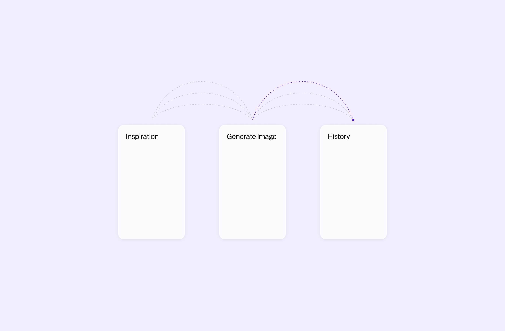
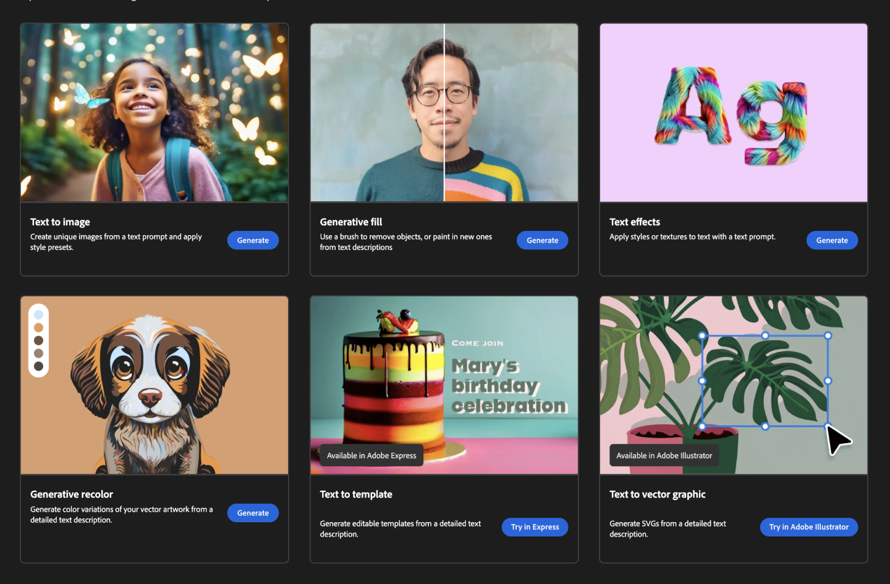

Reimagining Gen AI
Led the design for a set of Generative AI Vision features, all within tight deadlines and complex technical constraints. Attracted significant customer base for early trials. Featured in Cloud Next ‘23 Keynote by Executives.

Led the design for a set of Generative AI Vision features, all within tight deadlines and complex technical constraints. Attracted significant customer base for early trials. Featured in Cloud Next ‘23 Keynote by Executives.
Studio Vision empowers developers with generative vision AI capabilities. I led the design for a range of advanced Generative AI Vision features encompassing fine-tuning, style transfer, digital watermarking, prompt expansion, image captioning, image understanding, and video generation.
Embark on an artistic journey with image generation, where mere words ignite a symphony of pixels. Seamlessly refine your creations by steering them towards specific styles or subjects with a single click, unlocking endless creative possibilities.

Effortlessly grasp the essence of a video with a concise description that encapsulates its key points, accessible within a single click.

Empower users with granular control over video creation through scene-based generation, enabling the crafting of personalized and nuanced video narratives.

Generative AI is a new and exciting field, and the best ways to use it are still being discovered. I took the lead in imagining what these powerful tools will be capable of in just two years.
Current tools force users to switch between pages, which disrupts their creative process and reduces productivity.
My design consolidates the creation process within a single workspace. Prompting, inspiration management, and image viewing are easily accessible, encouraging a smoother and more intuitive experience.
Too many separate tools in products like Adobe Firefly create clutter and disrupt the creative process.
I designed a unified editing view where users have all their tools at their fingertips. This allows them to focus on executing their vision seamlessly.
My design supports the entire creative journey – from idea generation to final execution – within a single, streamlined interface.
“We decided to integrate Imagen into our app marketplace to provide it to our users. You’ve made great progress since we first meet last April” - Danny Wu, Head of AI Products, Canva
"By combining Google Vertex AI’s Imagen with Typeface's brand-personalized AI, we are able to help enterprises to create 10x personalized content in a fraction of time." - Vishal Sood, Head of Product at Typeface.
The paramount challenge in this project was striking a balance between rapid iterations within the evolving technical landscape and delivering an exemplary user experience. For instance, in the digital watermarking domain, the team initially proposed mandatory user setup for this feature due to technical constraints. By recognizing the suboptimal nature of this approach, I championed the complete removal of user setup through mockups, fostering cross-functional alignment across Cloud and DeepMind.
To effectively navigate this challenge, I harnessed my expertise in rapid iteration, constructing multiple prototypes to engage stakeholders and refine a diverse range of concepts. This iterative approach enabled us to continuously assess and refine the user experience while maintaining the pace of development.